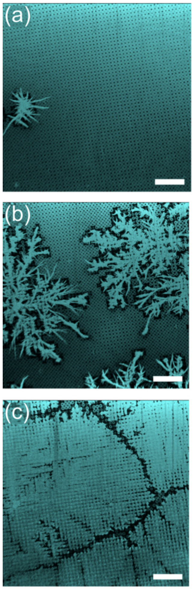

Throughout this paper, the underlying physics for frost
formation on a microstructured surface is explained.
Then two Monte-Carlo simulations of frost spreading on
micropillar surfaces were developed to recover
experimental results of frost formation in different
regimes of temperature and humidity. The first model was
inspired by Diffusion Limited Aggregation (DLA) and send
out random walkers one at a time; the second model
vectorized this algorithm and sped up the computational
times for the pattern formation. Ultimately, the results
were able to replicate the experimental results in
different regimes by tweaking parameters that described
the probability of a random walker freezing or drying.
Introduction
Frost nucleation and spreading on solid surfaces is a common
process which is of interest and concern in everyday life;
thus, it is important to understand the mechanisms involved
in frost spreading. While this process is difficult to
quantify on unstructured surfaces, growth of frost on
microstructured surfaces is easier to quantify and model.
Recent papers (\cite{frostFormation}, \cite{PREFrosting})
have considered frosting on such surfaces experimentally.
One novel finding that was reported in these papers is that
there are different regimes of frost growth that are
characterized by the surface temperature and the relative
humidity of the environment. For intermediate humidity, it
appears that the frost growth is fractal.
For example, as shown in Figure \ref{fig:hauerSpreading},
different regimes cause different patterns to form. In
Section \ref{section:physics}, the underlying physical
mechanism will be described for why patterns such as these
occur, however to gain intuition into these shapes, it is
relatively simple to understand. In each of these runs, the
surface temperature is the same; the only thing that is
changing is the relative humidity of the air above the
microstructured surface. As the humidity increases, the
amount of surface area that the frost particles cover grows;
furthermore, the shape becomes rounder and rounder and
ultimately overtakes most of the domain.

Frost for different relative humidity (RH)
result in different shapes. All three runs are
kept at \(T_{\mathrm{set}} = 30° C\). In
(a) RH = 14%, in (b) RH = 24%, and in (c) RH =
34%. Figure courtesy of \cite{PREFrosting}. The
frost particles are the light turquoise and the
dry regions are black.
Understanding the mechanisms for frost formation is of
utmost importance to the global infrastructure because of
how much impact frosting has on crops, plumbing,
refrigerators, and HVAC systems. Understanding why and how
frost forms can help politicians develop strategies to
minimize the impact in cost that frost formation has on real
world systems. For example, ice impacts aviation,
telecommunications, electrical transmission, hydropower,
wind power, oil rigs and the transportation industries.
According to \cite{frostFormation}, frost accounts for 40%
of road accidents in winter, accumulation of frost on
refrigerators or heat exchangers decreases their efficiency
by as high as 50-75%, and wind turbines experience power
losses at about 50% with ice accretion.